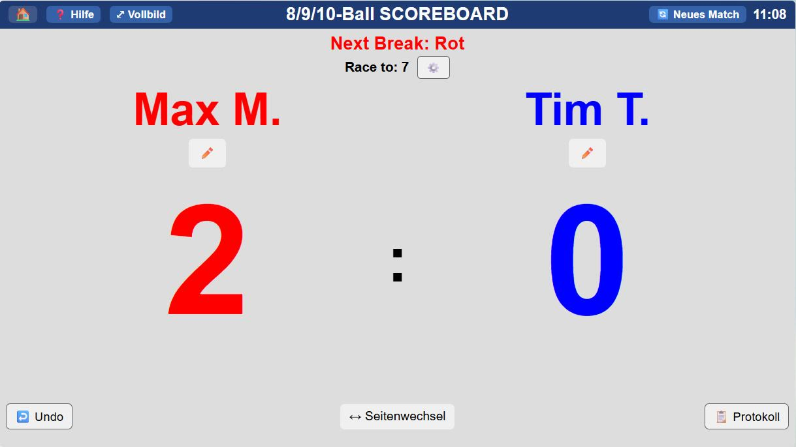

8-, 9- und 10-Ball
- Spielstand mit „Race to“, einstellbar
- Anzeige, wer anstößt, und Seitenwechsel
- Große Ziffern, gut lesbar vom Tisch aus
- Vollbild auf dem Tablet
Pool (8-, 9- und 10-Ball) und 14.1 endlos im Browser, ohne Anmeldung und ohne Installation. Einfach öffnen und zählen, auch ohne Internet.

Auf dem Tablet scoreboards.cuedesk.de aufrufen.
Im Browser „Zum Home-Bildschirm“ wählen. Dann startet das Board im Vollbild wie eine App.
8/9/10-Ball oder 14.1 endlos antippen, Race to einstellen.
Der Spielstand bleibt auf dem Gerät gespeichert, auch wenn der Browser geschlossen wird.
Ohne Anbindung: Diese Scoreboards zählen nur auf dem jeweiligen Gerät. Ergebnisse gehen nirgendwohin, es werden keine Daten übertragen. Wer Turniere, Live-Anzeige und Statistik möchte, nutzt die Scoreboards in CueDesk.
Die Scoreboards stehen unter der MIT-Lizenz. Ihr dürft sie kostenlos nutzen, verändern und weitergeben, auch in eurem Verein und auf eurer eigenen Website. Bedingung ist nur, dass der Lizenzhinweis erhalten bleibt.
Jedes Board ist eine einzige HTML-Datei. Farben, Texte, Logo oder Abläufe lassen sich mit jedem Texteditor ändern.
Das ZIP enthält immer den neuesten Stand.
index.html im Browser öffnen. Alles läuft sofort, ohne Server.index.html | Startseite, Spielauswahl |
index_pool.html | 8/9/10-Ball |
index141.html | 14.1 endlos |
14.1_Log.html | Aufnahme-Protokoll |
LICENSE | MIT-Lizenz |
MIT-Lizenz in einem Satz: Ihr dürft alles damit machen, solange der Hinweis „Copyright (c) 2026 Matthias Haas“ samt Lizenztext in den Dateien bleibt, und die Software kommt ohne jede Gewähr. Den vollständigen Text findet ihr in der Datei LICENSE.
Wenn ihr die Scoreboards angepasst habt und eure Idee auch anderen hilft, freuen wir uns über eine Nachricht.